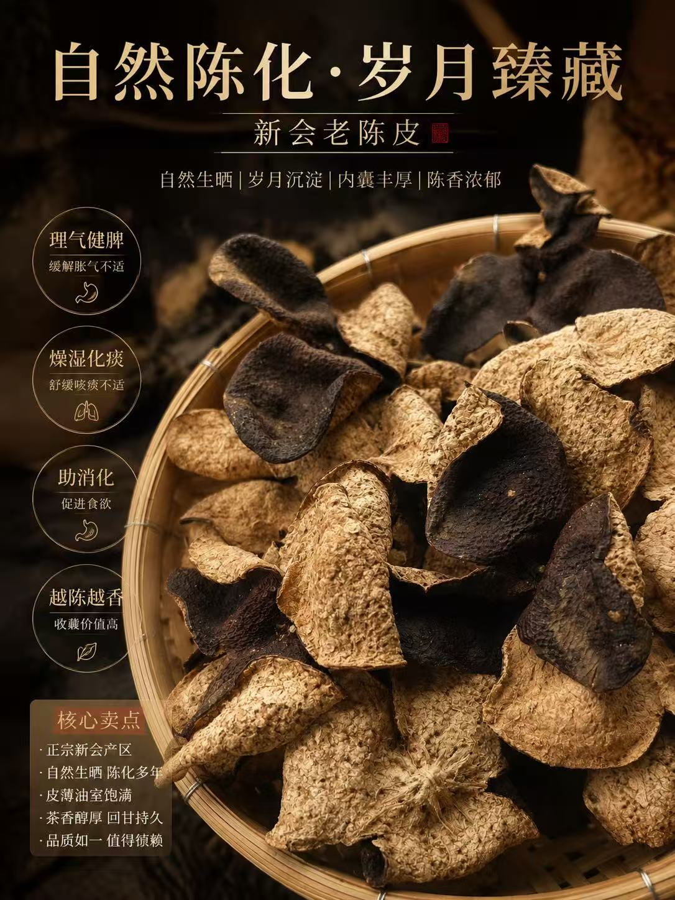

一只旧麻包袋里的新会陈皮

从港九中医师公会理事长何国伟那句放麻包袋最陈化说起,串起滢滢姐父亲二十年前埋进阁楼的一袋陈皮,写尽新会陈皮的鉴别、储存、文化与世代心事。
"每天写一篇陈皮故事，讲真话、说故事、帮你避坑。"
你可能在短视频上刷到过我怎么开皮、怎么翻晒、怎么被外地客商压价……但我更想让你知道，每一片陈皮背后，是一个果农家庭一年的盼头。

从港九中医师公会理事长何国伟那句放麻包袋最陈化说起,串起滢滢姐父亲二十年前埋进阁楼的一袋陈皮,写尽新会陈皮的鉴别、储存、文化与世代心事。
你看到的是真实的果园、真实的仓库、真实的开皮过程。没有剧本，没有滤镜。
我不会跟你说"黄酮含量""挥发油"，我就告诉你：这皮闻起来怎么样、泡出来什么颜色、值不值这个价。
收到不满意，七天无理由退。我敢这么说，是因为我对自己的陈皮有信心。
我70%的客户是老客户介绍的。你说好不好，他们说了算。
因为我卖的是真货。网上那些"十年陈皮"99块钱包邮的，你信吗？我算过账，光原料和仓储成本都不止这个价。你愿意花99买假皮，还是花几百买真货，自己选。
你可以先买50g试喝，不满意退给我，运费我出。或者来看我直播，我现场给你看仓库、看陈皮、泡给你看。眼见为实。
看你预算。300-500送天马5年，体面又实惠；1000以上送梅江10年，懂行的人一看就懂。不知道怎么选，私信我，我帮你搭配。
避光、通风、干燥，每年翻晒2-3次。别用塑料袋密封，会闷坏。棉麻袋或陶瓷罐最好。详细的我在日记里写过，可以搜"存储"看看。
现场开皮、现场冲泡、现场回答你的问题。不买也没关系，来聊聊天，学点陈皮知识。